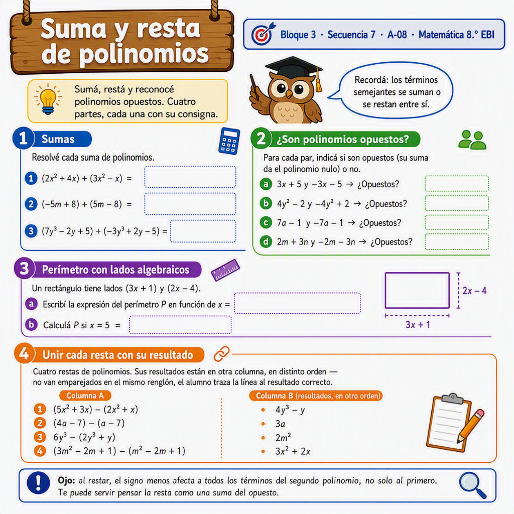

Reino Matemático · Secuencia 7 / A-08
Actividad de práctica — Parte 1: Sumas
Resolvé cada suma de polinomios.
1(2x² + 4x) + (3x² − x) =
2(−5m + 8) + (5m − 8) =
3(7y³ − 2y + 5) + (−3y³ + 2y − 5) =
Parte 2: ¿Son polinomios opuestos?
Para cada par, indicá si son opuestos (su suma da el polinomio nulo) o no.
a3x + 5 y −3x − 5¿Opuestos?
b4y² − 2 y −4y² + 2¿Opuestos?
c7a − 1 y −7a − 1¿Opuestos?
d2m + 3n y −2m − 3n¿Opuestos?
Parte 3: Perímetro con lados algebraicos
Un rectángulo tiene lados (3x + 1) y (2x − 4).
aEscribí la expresión del perímetro P en función de x =
bCalculá P si x = 5 =
Parte 4: Unir cada resta con su resultado
Cuatro restas de polinomios y sus resultados, en distinto orden. Unilos correctamente.
| (5x² + 3x) − (2x² + x) | 4y³ − y |
| (4a − 7) − (a − 7) | 3a |
| 6y³ − (2y³ + y) | 2m² |
| (3m² − 2m + 1) − (m² − 2m + 1) | 3x² + 2x |
Nota docente
Ojo: al restar, el signo menos afecta a todos los términos del segundo polinomio, no solo al primero. Te puede servir pensar la resta como una suma del opuesto.
Hoja ilustrada

Versión ilustrada para completar a mano, con el mismo contenido verificado arriba.
Fernández, G. M. (2026). Suma y resta de polinomios — Secuencia 7 Pública. Reino Matemático. Elaboración propia, inspirada en el enfoque de Ochoviet y Vitabar (2014), sin reproducir su texto.
Licencia CC BY-NC-SA 4.0 — se permite compartir y adaptar citando autoría, sin fines comerciales.